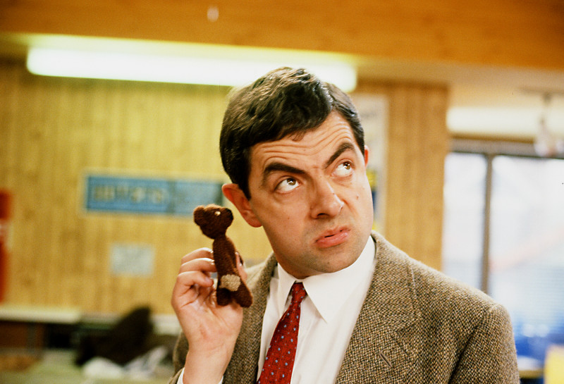
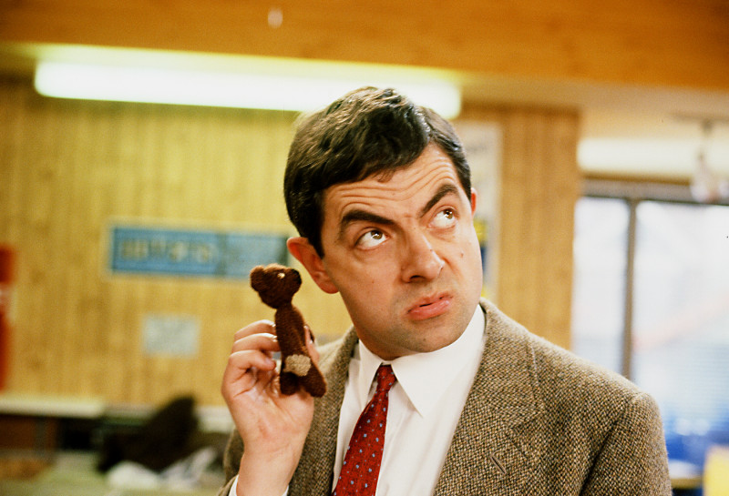

Mr. Bean
About Me
Hello! I'm Mr. Bean, a master of mischief and a connoisseur of comedy. With a knack for turning ordinary situations into unforgettable adventures, I've become somewhat of an expert in unintentional humor. My life is a series of comical escapades, each more hilarious than the last.
I'm not your typical professional; I thrive in environments where creativity meets chaos. My unique approach to problem-solving often involves unconventional methods that, while not always successful, are guaranteed to leave a lasting impression. I'm a man of few words but many expressions, and my ability to communicate without saying much is second to none. When I'm not busy getting into (and out of) trouble, you can find me exploring the world with my loyal companion, Teddy. Whether it's painting masterpieces, preparing a gourmet meal, or simply taking a stroll in the park, I approach every activity with a blend of curiosity and enthusiasm that's uniquely my own. My portfolio is a window into my world of whimsy and wonder. From accidental adventures to moments of unexpected genius, each experience has shaped me into the Mr. Bean you see today. So, sit back, enjoy the ride, and remember – life is better when you're laughing!
My Video
Photo Gallery
 

My Projects
The Great Teddy RescueIn this heartwarming project, Mr. Bean embarks on a city-wide adventure to rescue his beloved teddy bear. The journey is filled with humorous mishaps and ingenious solutions, showcasing Mr. Bean's unorthodox problem-solving skills. This project highlights the importance of friendship and determination, all wrapped up in a series of laugh-out-loud scenarios. |
|
Disaster Chef: A Culinary Misadventure"Disaster Chef" is a comedic exploration of Mr. Bean's attempts at mastering the culinary arts. From kitchen blunders to accidental food fusions, this project is a compilation of cooking episodes where each dish tells a story of creativity and chaos. It's a testament to Mr. Bean's ability to turn even the simplest recipe into an unforgettable experience. |
|
Bean's Green Thumb: The Unpredictable GardenIn this project, Mr. Bean tackles gardening with his usual blend of enthusiasm and unpredictability. Documenting his journey from planting seeds to battling with a rogue hose, the project is a series of comedic yet educational episodes on gardening. It's perfect for those who appreciate the humor in trial and error and the joy of unexpected outcomes. |
|
The Silent Comedy: Mime and ExpressionThis project is a tribute to the art of mime and physical comedy. Mr. Bean, with his iconic non-verbal communication skills, creates a series of mime performances that are both hilarious and expressive. Each episode is a lesson in conveying emotions and stories without words, proving that actions can indeed speak louder than words. |
|
Bean Around the World: Unconventional Travel TalesJoin Mr. Bean as he travels to various destinations around the globe, turning each trip into an extraordinary adventure. This project captures the essence of travel through the eyes of a curious and comical character. From navigating language barriers to embracing local cultures, Mr. Bean's travel tales are filled with humor, heart, and a touch of chaos. |
My Résumé
Download My RésuméMy Audio Clip
Contact Me
Mobile No: +91-999-999-9999
Email: your.email@example.com